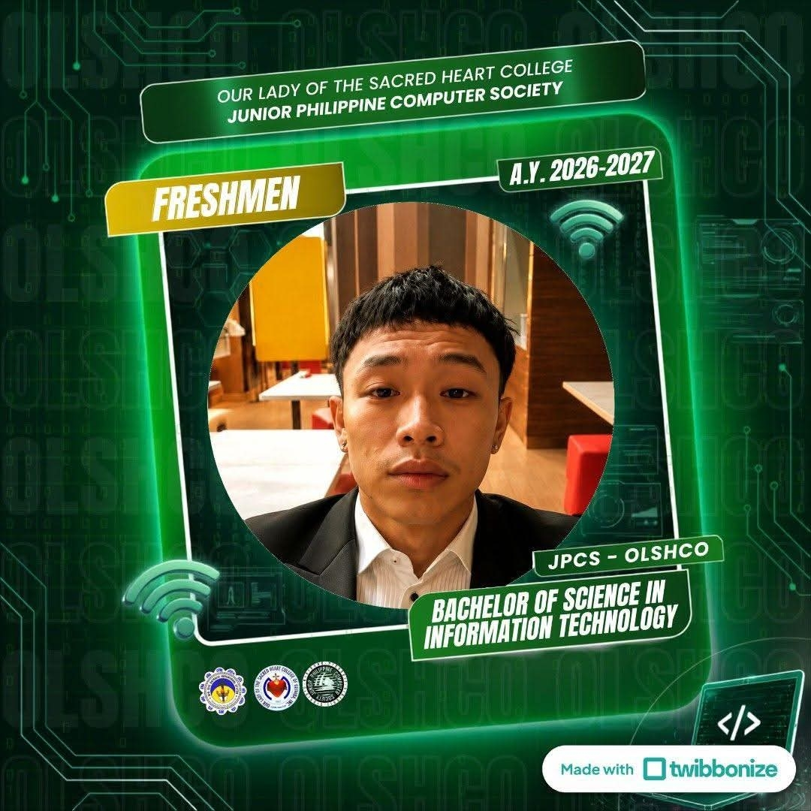

Our Lady of the Sacred Heart College of Guimba, Inc.
Bachelor of Science in Information Technology
A.Y. 2026–2027BS INFORMATION TECHNOLOGY · FRESHMAN
An aspiring IT professional who is eager to learn, explore technology, and build useful programs. Welcome to my personal portfolio.
Explore My Portfolio →
GET TO KNOW ME
A little introduction and some details about me.
Hi! I'm Jemouldin Landicho, a 19-year-old freshman taking Bachelor of Science in Information Technology at Our Lady of the Sacred Heart College of Guimba, Inc. I enjoy learning about computers and technology. I am currently developing my programming and web development skills, and I look forward to growing as an IT student.
MY LEARNING JOURNEY
The schools that are part of my academic journey.
Bachelor of Science in Information Technology
A.Y. 2026–2027School attended
School attended
WHAT I'M LEARNING
My current skills as a beginner IT student.
Basic Java syntax, variables, user input, conditional statements, loops, and methods.
Creating basic web pages, organizing content, and styling page layouts.
Using computer applications, managing files, and navigating digital tools.
Following logical steps, identifying simple errors, and finding solutions.
Cooperating with classmates and contributing to group activities.
Open to feedback and motivated to improve my knowledge and abilities.
CC102 · FINAL PERFORMANCE TASK
A simple number trick presented as a mind-reading game.
Mind Reader asks the player to think of a whole number and follow a series of mathematical steps. After the calculations, the game reveals the final number, 5. It uses Java Scanner for input, a do-while loop to allow replaying, if-else statements to respond to the player's choice, and a method to create short pauses.
import java.util.Scanner;
public class Main {
public static void main(String[] args) {
Scanner sc = new Scanner(System.in);
String again;
System.out.println("==============================");
System.out.println(" MIND READER");
System.out.println("==============================");
System.out.println("I will guess your final number!");
do {
System.out.println("\nThink of any whole number.");
System.out.println("Keep your number a secret!");
System.out.print("Ready? Type YES: ");
sc.next();
System.out.println("\nFollow these steps carefully.");
System.out.println("1. Multiply your number by 2.");
System.out.println("2. Add 10 to the result.");
System.out.println("3. Divide the result by 2.");
System.out.println("4. Subtract your original number.");
System.out.println("\nCalculating your thoughts...");
delay();
System.out.println("Analyzing brain waves...");
delay();
System.out.println("Reading your mind...");
delay();
System.out.println("\n******************************");
System.out.println("YOUR FINAL NUMBER IS...");
delay();
System.out.println(" 5");
System.out.println("******************************");
System.out.println("\nAm I a real mind reader?");
System.out.println("1. Yes, that's amazing!");
System.out.println("2. No, that's a trick!");
System.out.print("Choose: ");
int choice = sc.nextInt();
if (choice == 1) {
System.out.println("Your mind is an open book to me!");
} else if (choice == 2) {
System.out.println("Correct! Mathematics is the secret!");
} else {
System.out.println("Interesting choice!");
}
System.out.print("\nPlay again? (yes/no): ");
again = sc.next();
} while (again.equalsIgnoreCase("yes"));
System.out.println("\nThanks for playing!");
System.out.println("The mind reader is signing off...");
sc.close();
}
public static void delay() {
try {
Thread.sleep(8000);
} catch (InterruptedException e) {
Thread.currentThread().interrupt();
}
}
}The complete Java source file is also included in this portfolio folder as Main.java.